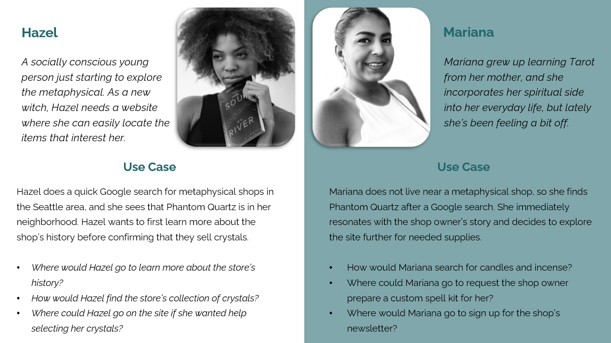

Phantom Quartz
Website Navigation Redesign
Phantom Quartz is a metaphysical shop in Seattle that endeavors to bring inspiration and healing to both experienced practitioners and novices alike.
Methods: User Personas, Task Scenarios, Content Inventory, Card Sorts, Information Architecture Testing, First Click Testing, Wireframes, Site Map
Technologies: Figma, Mural, Optimal Sort, PowerPoint
Team Members: Solo Project
Overview
DePaul's HCI 457: Information Architecture and Content Strategy course tasked me with improving the information architecture and overall navigation of a living website.
The process included a complete evaluation of the existing site's pages and content, and three extensive rounds of usability testing.
I chose to evaluate and refine Phantom Quartz's mobile site because I resonated with the shop's mission to educate and support its surrounding community. I reached out to the business to request a formal collaboration on this project, but I received no response, and so this case study is password protected.
Problem Statement
Phantom Quartz's existing information architecture includes redundant items, ambiguous item/service names, and confusing navigation that make it difficult to quickly locate an item or service.
Objectives
In order to create a user-tested, clear information architecture, I needed to follow the steps below.
- Assess the current Information Architecture for redundancies and suboptimal content placement.
- Reorganize and propose improvements to the site’s navigation.
- Test and validate proposed changes with card sorts, IA testing, and first click testing.
- Create a new Site Map, supported by testing, that encompasses the proposed changes.
User Groups
Through research and conversation with online members of Seattle's metaphysical community, I came up with two different personas who would be likely to use the Phantom Quartz mobile site.
These two personas are The Metaphysical Novice (Hazel) and The Confident Practitioner (Mariana). These two profiles embody both the existing metaphysical community and the growing interest in the metaphysical arts present in Seattle.
To help further understand the user, I generated two user stories below:
Process
Content Inventory
The first step was to conduct a thorough Content Inventory of the existing site. This information was amassed in an Excel document that included information like unique content IDs, titels, URLs, file formats, categories/tags, and descriptions of each element. This document helped realize redundant content and understand the current navigational hierarchy.
Usability Testing
I used three different forms of Usability Tests to hone the final site layout.
1. Card Sorts
With the content items from the Content Inventory in hand, I conducted two different card sorts over the course of a week.
I started with an Open Card Sort. The goal was to test if there was a natural grouping for the redundant items, giving participants 100% freedom to create their own category names. While some of the cards were placed in similar categories by multiple participants, I found that most users chose to create unique category names and did not agree on the overall placement of the cards.
I realized this outcome was not caused by the content, but by the lack of direction on my part when designing the Card Sort. In hindsight, a Hybrid Sort which allowed participants to use either suggested categories or their own categories would’ve given more guidance to participants.
For the second round of Card Sorts I chose to use a Closed Sort with 5 categories. These 5 categories were determined looking at the results of the Open Sort and the existing site’s navigation. This was a much more successful test, and a distinct grouping of items became clear. Interestingly, participants still had trouble categorizing the content items on the Services & Offerings page, and so that page title was changed to “Personalized Services” to emphasize the individualized nature of the services.

2. Information Architecture Testing
Once I had the results from the card sort, I redesigned the existing site map. To test that the updated menu tree successfully incorporated the main findings from the card sorts, I created an IA test through Treejack on Optimal Sort.
Total Participants: 7
Scenarios Considered:
- You just received an incense burner as a gift and you want to purchase some incense cones to use with it. Using this site, where would you go to view the shop's collection of incense?
- Your friend is starting to dabble in the metaphysical arts, and you would like to get them a gift card for this shop. Using this site, where would you go to purchase a gift card?
- Using this site, where would you go to subscribe to the shop's newsletter?
- You want to explore spell work, but you don't know which items to buy. Using this site, where would you go to get help with a custom spell kit?
3. First Click Testing
After implementing the findings from the IA test, I made another edit to the Site Map and created a few wireframes to test that the navigation was still optimized after the information architecture was translated into app form.
Using Optimal Sort again, I created a First Click Test to see how users would complete specific tasks "in-app."
Total Participants: 17
Scenarios Considered
- You decide that you don't want this product after all. Where would you click to navigate out of the Shipping Preferences pop up?
- You start the check out process for an item, but then you remember that you want to browse the site's collection of candles. From this screen, where would you go to navigate to the site's collection of products?
- You are now on the Products page of the website. How would you find the shop's collection of incense?
Wireframes
Once I had the results from all of the usability tests, I built out complete wireframes for these two task scenarios:
- Book a Crystal Consultation
- Purchase a "Nine Treasures" pack of incense
The first task is something our persona, Hazel, would do, and the second task is for our persona, Mariana. Both tasks are modeled out below as mid-fidelity prototypes.
The Outcome
- Redundant content
Each piece of content can be found only once in the site map, and they have been grouped according to the results of the card sorts.
- “How to get it” filter
Remedied through pop-up built into Add-to-Cart process in wireframe.
- Gift Cards page in primary navigation
Gift Cards were relocated to Products section.
- Services & Offerings page location
The page was relocated next to the Products page in the center of the Menu
Lessons Learned
- This case study ignited my interest in UX Research. I realized that design is only as strong as the research that supports it.
- Through the various methods of testing I learned that button functionality and icons/images need to be crystal clear so that users aren't confused by similar imagery.
- If I had more time I would recruit additional research participants and conduct a minimum of three card sorts to try to remedy the flaws of the closed sort.
- In the future I would like to collaborate with real clients who can provide input on the overall style and tone they imagine for their product. I typically enjoy diving into the UI elements of an app after the research and design is done, but I felt out of my depth with this particular mobile site because it is such a personal site to the owner.
- I loved creating the usability tests and waiting to see how users would interact with them. It is fascinating to me how differently 10-20 particpants accomplish a task. I look forward to one day taking on the challenge of researching and designing for a product with a large userbase.